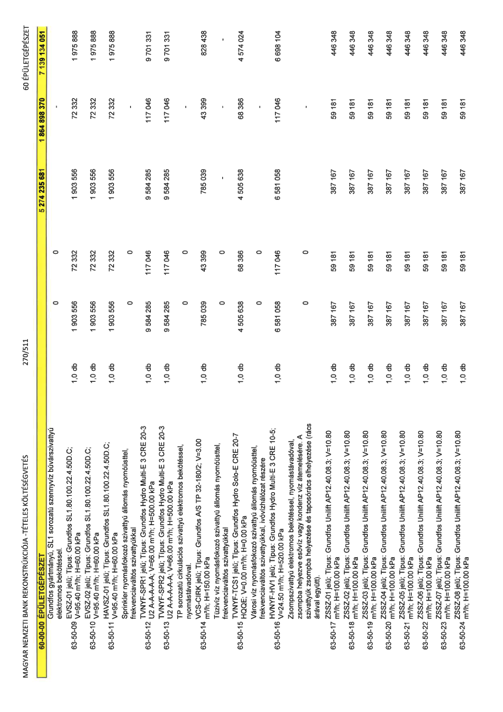

| Tétel | Menny. | Egys. | Anyag e.ár (net HUF) | Díj e.ár (net HUF) | Anyag összesen (net HUF) | Díj összesen (net HUF) | Anyag+Díj összesen (net HUF) |
|---|---|---|---|---|---|---|---|
| 60-00-00 ÉPÜLETGÉPÉSZET | NaN | NaN | 0 | 0 | 5 274 235 681 | 1 864 898 370 | 7 139 134 051 |
| Grundfos gyártmányú, SL1 sorozatú szennyvíz búvárszivattyú elektromos bekötéssel. | 0 | 0 | 0 | 0 | 0 | 0 | 0 |
| 63-50-09 EVSZ-01 jelű; Típus: Grundfos SL1.80.100.22.4.50D.C; V=95.40 m³/h; H=60.00 kPa | 1,0 | db | 1 903 556 | 72 332 | 1 903 556 | 72 332 | 1 975 888 |
| 63-50-10 EVSZ-02 jelű; Típus: Grundfos SL1.80.100.22.4.50D.C; V=95.40 m³/h; H=60.00 kPa | 1,0 | db | 1 903 556 | 72 332 | 1 903 556 | 72 332 | 1 975 888 |
| 63-50-11 HAVSZ-01 jelű; Típus: Grundfos SL1.80.100.22.4.50D.C; V=95.40 m³/h; H=60.00 kPa | 1,0 | db | 1 903 556 | 72 332 | 1 903 556 | 72 332 | 1 975 888 |
| Sprinkler nyomásfokozó szivattyú állomás nyomásüsttel, frekvenciaváltós szivattyúkkal | 0 | 0 | 0 | 0 | 0 | 0 | 0 |
| 63-50-12 TVNYF-SPR1 jelű; Típus: Grundfos Hydro Multi-E 3 CRE 20-3 U2 A-A-A-A-A; V=66.00 m³/h; H=500.00 kPa | 1,0 | db | 9 584 285 | 117 046 | 9 584 285 | 117 046 | 9 701 331 |
| 63-50-13 TVNYF-SPR2 jelű; Típus: Grundfos Hydro Multi-E 3 CRE 20-3 U2 A-A-A-A-A; V=66.00 m³/h; H=500.00 kPa | 1,0 | db | 9 584 285 | 117 046 | 9 584 285 | 117 046 | 9 701 331 |
| TP sorozatú cirkulációs szivattyú elektromos bekötéssel, nyomástávadóval. | 0 | 0 | 0 | 0 | 0 | 0 | 0 |
| 63-50-14 VCS-CIRK jelű; Típus: Grundfos A/S TP 32-180/2; V=3.00 m³/h; H=150.00 kPa | 1,0 | db | 785 039 | 43 399 | 785 039 | 43 399 | 828 438 |
| Tűzivíz víz nyomásfokozó szivattyú állomás nyomóüsttel, frekvenciaváltós szivattyúkkal | 0 | 0 | 0 | 0 | 0 | 0 | 0 |
| 63-50-15 TVNYF-TCS1 jelű; Típus: Grundfos Hydro Solo-E CRE 20-7 HQQE; V=0.00 m³/h; H=0.00 kPa | 1,0 | db | 4 505 638 | 68 386 | 4 505 638 | 68 386 | 4 574 024 |
| Városi víz nyomásfokozó szivattyú állomás nyomóüsttel, frekvenciaváltós szivattyúkkal, ivóvízhálózat részére | 0 | 0 | 0 | 0 | 0 | 0 | 0 |
| 63-50-16 HVNYF-HV1 jelű; Típus: Grundfos Hydro Multi-E 3 CRE 10-5; V=24.50 m³/h; H=520.00 kPa | 1,0 | db | 6 581 058 | 117 046 | 6 581 058 | 117 046 | 6 698 104 |
| Zsompszivattyú elektromos bekötéssel, nyomástávadóval, zsompba helyezve esővíz vagy kondenz víz átemelésére. A szivattyúk zsompba helyezése és taposórács elhelyezése (rács árával együtt). | 0 | 0 | 0 | 0 | 0 | 0 | 0 |
| 63-50-17 ZSSZ-01 jelű; Típus: Grundfos Unilift AP12.40.08.3; V=10.80 m³/h; H=100.00 kPa | 1,0 | db | 387 167 | 59 181 | 387 167 | 59 181 | 446 348 |
| 63-50-18 ZSSZ-02 jelű; Típus: Grundfos Unilift AP12.40.08.3; V=10.80 m³/h; H=100.00 kPa | 1,0 | db | 387 167 | 59 181 | 387 167 | 59 181 | 446 348 |
| 63-50-19 ZSSZ-03 jelű; Típus: Grundfos Unilift AP12.40.08.3; V=10.80 m³/h; H=100.00 kPa | 1,0 | db | 387 167 | 59 181 | 387 167 | 59 181 | 446 348 |
| 63-50-20 ZSSZ-04 jelű; Típus: Grundfos Unilift AP12.40.08.3; V=10.80 m³/h; H=100.00 kPa | 1,0 | db | 387 167 | 59 181 | 387 167 | 59 181 | 446 348 |
| 63-50-21 ZSSZ-05 jelű; Típus: Grundfos Unilift AP12.40.08.3; V=10.80 m³/h; H=100.00 kPa | 1,0 | db | 387 167 | 59 181 | 387 167 | 59 181 | 446 348 |
| 63-50-22 ZSSZ-06 jelű; Típus: Grundfos Unilift AP12.40.08.3; V=10.80 m³/h; H=100.00 kPa | 1,0 | db | 387 167 | 59 181 | 387 167 | 59 181 | 446 348 |
| 63-50-23 ZSSZ-07 jelű; Típus: Grundfos Unilift AP12.40.08.3; V=10.80 m³/h; H=100.00 kPa | 1,0 | db | 387 167 | 59 181 | 387 167 | 59 181 | 446 348 |
| 63-50-24 ZSSZ-08 jelű; Típus: Grundfos Unilift AP12.40.08.3; V=10.80 m³/h; H=100.00 kPa | 1,0 | db | 387 167 | 59 181 | 387 167 | 59 181 | 446 348 |
